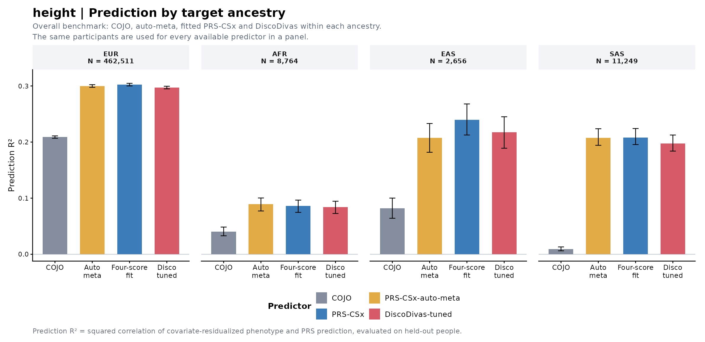
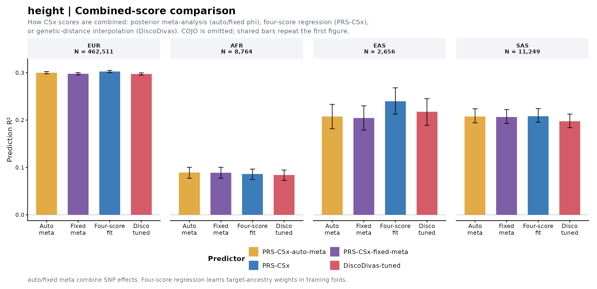
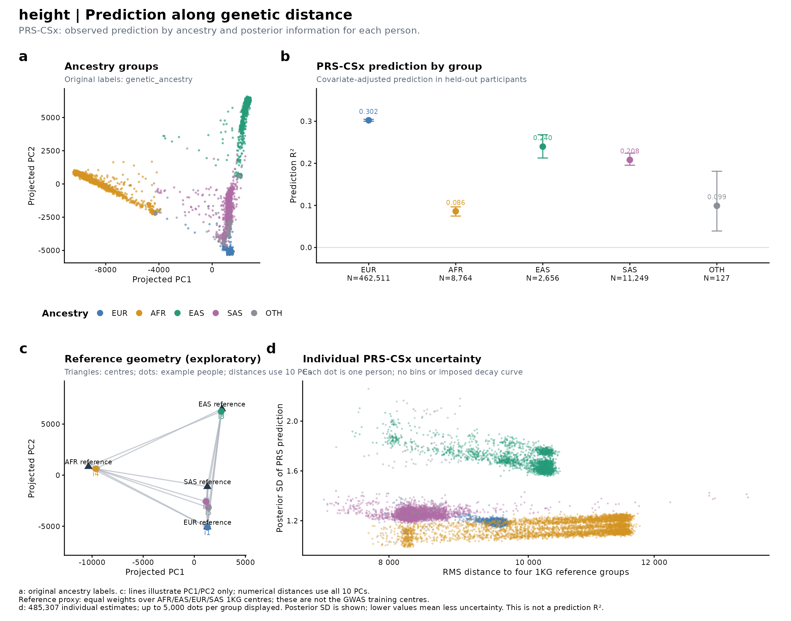
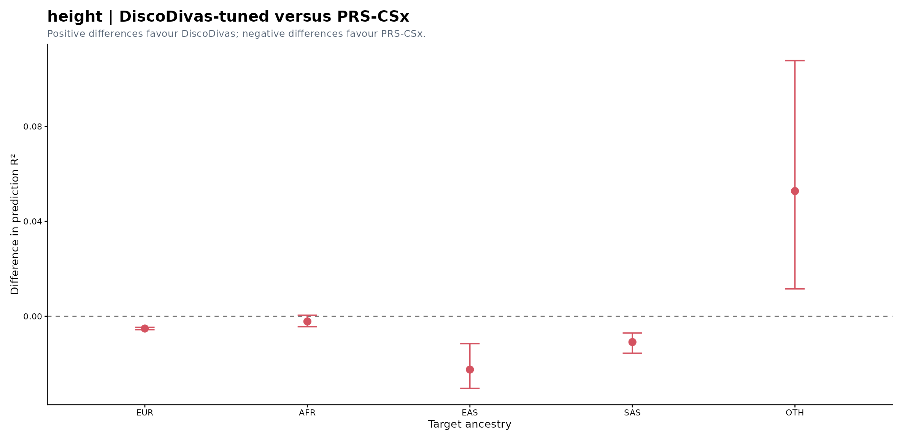
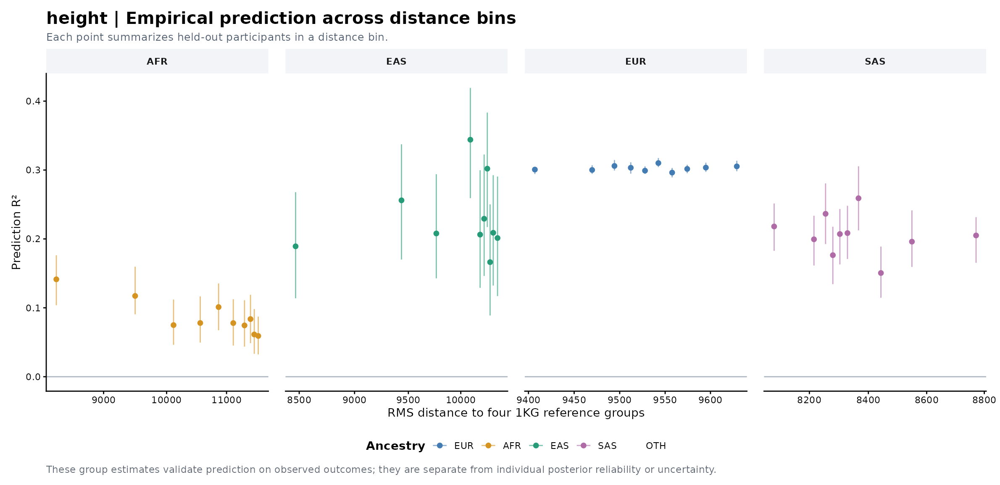

Outcome: height · Covariates: age, sex, PC1, PC2 · 5 held-out folds.
Prediction R² is the squared correlation between covariate-residualized observed and predicted phenotypes in held-out participants. It differs from the previous SSE-based partial R², which remains available for comparison.
Equal-weight four-reference distance. Reference centres were selected; this axis is a reference proxy and must not be called distance to GWAS training data.
Performance · Empirical bins · Methods
| Ancestry | N | Prediction R² | Prediction r | SSE-based partial R² | RMSE |
|---|---|---|---|---|---|
| EUR | 462,511 | 0.3023 | 0.5499 | 0.3023 | 5.325 |
| AFR | 8,764 | 0.0862 | 0.2935 | 0.0862 | 6.014 |
| EAS | 2,656 | 0.2398 | 0.4897 | 0.2397 | 4.965 |
| SAS | 11,249 | 0.2082 | 0.4563 | 0.2082 | 5.385 |
| OTH | 127 | 0.0991 | 0.3148 | 0.0556 | 5.730 |





The paired-comparison workbook reports recoverable point estimates. The previous exporter did not retain its paired bootstrap intervals; the existing figure is preserved.
| method | estimate | lower95 | upper95 | N | events | K | P | metric | target | baseline_R2 | full_R2 | delta_R2 | baseline_SSE | full_SSE | RMSE | SSE_partial_R2 | prediction_r |
|---|---|---|---|---|---|---|---|---|---|---|---|---|---|---|---|---|---|
| COJO | 0.2088700 | 2.0679e-01 | 0.211010 | 462510 | NA | NA | NA | OOF_prediction_R2 | EUR | 0.52508 | 0.62427 | 0.0991960 | 18795000.0 | 14869000.0 | 5.6700 | 0.2088700 | 0.457020 |
| PRS-CSx-auto-meta | 0.3000000 | 2.9757e-01 | 0.302300 | 462510 | NA | NA | NA | OOF_prediction_R2 | EUR | 0.52508 | 0.66755 | 0.1424800 | 18795000.0 | 13156000.0 | 5.3335 | 0.3000000 | 0.547720 |
| PRS-CSx | 0.3023400 | 3.0007e-01 | 0.304690 | 462510 | NA | NA | NA | OOF_prediction_R2 | EUR | 0.52508 | 0.66867 | 0.1435900 | 18795000.0 | 13112000.0 | 5.3245 | 0.3023400 | 0.549860 |
| DiscoDivas-untuned | 0.2979300 | 2.9565e-01 | 0.300140 | 462510 | NA | NA | NA | OOF_prediction_R2 | EUR | 0.52508 | 0.66657 | 0.1414900 | 18795000.0 | 13195000.0 | 5.3413 | 0.2979300 | 0.545830 |
| PRS-CSx-fixed-meta | 0.2977300 | 2.9530e-01 | 0.300020 | 462510 | NA | NA | NA | OOF_prediction_R2 | EUR | 0.52508 | 0.66648 | 0.1414000 | 18795000.0 | 13199000.0 | 5.3421 | 0.2977300 | 0.545650 |
| DiscoDivas-tuned | 0.2972200 | 2.9488e-01 | 0.299500 | 462510 | NA | NA | NA | OOF_prediction_R2 | EUR | 0.52508 | 0.66623 | 0.1411600 | 18795000.0 | 13209000.0 | 5.3440 | 0.2972200 | 0.545180 |
| csx.AFR | 0.0839920 | 8.2462e-02 | 0.085644 | 462510 | NA | NA | NA | OOF_prediction_R2 | EUR | 0.52508 | 0.56497 | 0.0398900 | 18795000.0 | 17216000.0 | 6.1011 | 0.0839920 | 0.289810 |
| csx.EAS | 0.1483700 | 1.4647e-01 | 0.150020 | 462510 | NA | NA | NA | OOF_prediction_R2 | EUR | 0.52508 | 0.59554 | 0.0704640 | 18795000.0 | 16006000.0 | 5.8828 | 0.1483700 | 0.385190 |
| csx.EUR | 0.3006000 | 2.9823e-01 | 0.302950 | 462510 | NA | NA | NA | OOF_prediction_R2 | EUR | 0.52508 | 0.66784 | 0.1427600 | 18795000.0 | 13145000.0 | 5.3312 | 0.3006000 | 0.548270 |
| csx.SAS | 0.0701120 | 6.8771e-02 | 0.071447 | 462510 | NA | NA | NA | OOF_prediction_R2 | EUR | 0.52508 | 0.55838 | 0.0332980 | 18795000.0 | 17477000.0 | 6.1472 | 0.0701120 | 0.264790 |
| COJO | 0.0403190 | 3.2955e-02 | 0.048497 | 8764 | NA | NA | NA | OOF_prediction_R2 | AFR | 0.47426 | 0.49545 | 0.0211960 | 346850.0 | 332870.0 | 6.1629 | 0.0403160 | 0.200800 |
| PRS-CSx-auto-meta | 0.0892760 | 7.7199e-02 | 0.100360 | 8764 | NA | NA | NA | OOF_prediction_R2 | AFR | 0.47426 | 0.52119 | 0.0469360 | 346850.0 | 315890.0 | 6.0036 | 0.0892750 | 0.298790 |
| PRS-CSx | 0.0861680 | 7.4667e-02 | 0.096547 | 8764 | NA | NA | NA | OOF_prediction_R2 | AFR | 0.47426 | 0.51956 | 0.0453010 | 346850.0 | 316970.0 | 6.0139 | 0.0861650 | 0.293540 |
| DiscoDivas-untuned | 0.0566160 | 4.9034e-02 | 0.065308 | 8764 | NA | NA | NA | OOF_prediction_R2 | AFR | 0.47426 | 0.50402 | 0.0297650 | 346850.0 | 327220.0 | 6.1103 | 0.0566150 | 0.237940 |
| PRS-CSx-fixed-meta | 0.0890700 | 7.7416e-02 | 0.100360 | 8764 | NA | NA | NA | OOF_prediction_R2 | AFR | 0.47426 | 0.52108 | 0.0468280 | 346850.0 | 315960.0 | 6.0043 | 0.0890700 | 0.298450 |
| DiscoDivas-tuned | 0.0840190 | 7.2698e-02 | 0.094547 | 8764 | NA | NA | NA | OOF_prediction_R2 | AFR | 0.47426 | 0.51843 | 0.0441710 | 346850.0 | 317710.0 | 6.0210 | 0.0840170 | 0.289860 |
| csx.AFR | 0.0431840 | 3.6396e-02 | 0.051102 | 8764 | NA | NA | NA | OOF_prediction_R2 | AFR | 0.47426 | 0.49696 | 0.0227030 | 346850.0 | 331870.0 | 6.1537 | 0.0431830 | 0.207810 |
| csx.EAS | 0.0448450 | 3.5724e-02 | 0.052282 | 8764 | NA | NA | NA | OOF_prediction_R2 | AFR | 0.47426 | 0.49783 | 0.0235760 | 346850.0 | 331300.0 | 6.1484 | 0.0448420 | 0.211770 |
| csx.EUR | 0.0637950 | 5.3805e-02 | 0.073694 | 8764 | NA | NA | NA | OOF_prediction_R2 | AFR | 0.47426 | 0.50779 | 0.0335400 | 346850.0 | 324730.0 | 6.0871 | 0.0637950 | 0.252580 |
| csx.SAS | 0.0150160 | 1.0336e-02 | 0.021038 | 8764 | NA | NA | NA | OOF_prediction_R2 | AFR | 0.47426 | 0.48215 | 0.0078940 | 346850.0 | 341650.0 | 6.2436 | 0.0150150 | 0.122540 |
| COJO | 0.0817990 | 6.4152e-02 | 0.100130 | 2656 | NA | NA | NA | OOF_prediction_R2 | EAS | 0.49587 | 0.53711 | 0.0412370 | 86112.0 | 79068.0 | 5.4562 | 0.0817980 | 0.286010 |
| PRS-CSx-auto-meta | 0.2075400 | 1.8175e-01 | 0.233100 | 2656 | NA | NA | NA | OOF_prediction_R2 | EAS | 0.49587 | 0.60050 | 0.1046300 | 86112.0 | 68240.0 | 5.0688 | 0.2075400 | 0.455570 |
| PRS-CSx | 0.2397600 | 2.1263e-01 | 0.267970 | 2656 | NA | NA | NA | OOF_prediction_R2 | EAS | 0.49587 | 0.61673 | 0.1208700 | 86112.0 | 65467.0 | 4.9647 | 0.2397500 | 0.489650 |
| DiscoDivas-untuned | 0.2243000 | 1.9485e-01 | 0.250720 | 2656 | NA | NA | NA | OOF_prediction_R2 | EAS | 0.49587 | 0.60895 | 0.1130800 | 86112.0 | 66797.0 | 5.0149 | 0.2243000 | 0.473600 |
| PRS-CSx-fixed-meta | 0.2041500 | 1.7883e-01 | 0.230030 | 2656 | NA | NA | NA | OOF_prediction_R2 | EAS | 0.49587 | 0.59879 | 0.1029200 | 86112.0 | 68532.0 | 5.0796 | 0.2041500 | 0.451830 |
| DiscoDivas-tuned | 0.2173400 | 1.8901e-01 | 0.245100 | 2656 | NA | NA | NA | OOF_prediction_R2 | EAS | 0.49587 | 0.60543 | 0.1095600 | 86112.0 | 67397.0 | 5.0374 | 0.2173300 | 0.466200 |
| csx.AFR | 0.0362810 | 2.4094e-02 | 0.050443 | 2656 | NA | NA | NA | OOF_prediction_R2 | EAS | 0.49587 | 0.51416 | 0.0182900 | 86112.0 | 82988.0 | 5.5898 | 0.0362800 | 0.190480 |
| csx.EAS | 0.2276100 | 1.9906e-01 | 0.256170 | 2656 | NA | NA | NA | OOF_prediction_R2 | EAS | 0.49587 | 0.61061 | 0.1147400 | 86112.0 | 66512.0 | 5.0042 | 0.2276100 | 0.477080 |
| csx.EUR | 0.1696100 | 1.4272e-01 | 0.195670 | 2656 | NA | NA | NA | OOF_prediction_R2 | EAS | 0.49587 | 0.58137 | 0.0855050 | 86112.0 | 71507.0 | 5.1887 | 0.1696100 | 0.411840 |
| csx.SAS | 0.0602480 | 4.1816e-02 | 0.078837 | 2656 | NA | NA | NA | OOF_prediction_R2 | EAS | 0.49587 | 0.52623 | 0.0303640 | 86112.0 | 80926.0 | 5.5199 | 0.0602290 | 0.245450 |
| COJO | 0.0094486 | 6.1924e-03 | 0.013087 | 11249 | NA | NA | NA | OOF_prediction_R2 | SAS | 0.56729 | 0.57138 | 0.0040879 | 412040.0 | 408140.0 | 6.0235 | 0.0094473 | 0.097204 |
| PRS-CSx-auto-meta | 0.2075200 | 1.9421e-01 | 0.223780 | 11249 | NA | NA | NA | OOF_prediction_R2 | SAS | 0.56729 | 0.65709 | 0.0897970 | 412040.0 | 326530.0 | 5.3877 | 0.2075200 | 0.455550 |
| PRS-CSx | 0.2082100 | 1.9555e-01 | 0.224170 | 11249 | NA | NA | NA | OOF_prediction_R2 | SAS | 0.56729 | 0.65739 | 0.0900930 | 412040.0 | 326250.0 | 5.3854 | 0.2082100 | 0.456300 |
| DiscoDivas-untuned | 0.1690300 | 1.5560e-01 | 0.183820 | 11249 | NA | NA | NA | OOF_prediction_R2 | SAS | 0.56729 | 0.64044 | 0.0731410 | 412040.0 | 342390.0 | 5.5170 | 0.1690300 | 0.411140 |
| PRS-CSx-fixed-meta | 0.2061900 | 1.9291e-01 | 0.222190 | 11249 | NA | NA | NA | OOF_prediction_R2 | SAS | 0.56729 | 0.65651 | 0.0892190 | 412040.0 | 327080.0 | 5.3922 | 0.2061900 | 0.454080 |
| DiscoDivas-tuned | 0.1973800 | 1.8387e-01 | 0.212570 | 11249 | NA | NA | NA | OOF_prediction_R2 | SAS | 0.56729 | 0.65270 | 0.0854070 | 412040.0 | 330710.0 | 5.4221 | 0.1973800 | 0.444270 |
| csx.AFR | 0.0624980 | 5.4873e-02 | 0.071172 | 11249 | NA | NA | NA | OOF_prediction_R2 | SAS | 0.56729 | 0.59434 | 0.0270430 | 412040.0 | 386280.0 | 5.8600 | 0.0624970 | 0.250000 |
| csx.EAS | 0.1182900 | 1.0660e-01 | 0.131330 | 11249 | NA | NA | NA | OOF_prediction_R2 | SAS | 0.56729 | 0.61848 | 0.0511840 | 412040.0 | 363300.0 | 5.6829 | 0.1182900 | 0.343930 |
| csx.EUR | 0.1965500 | 1.8520e-01 | 0.212300 | 11249 | NA | NA | NA | OOF_prediction_R2 | SAS | 0.56729 | 0.65234 | 0.0850490 | 412040.0 | 331050.0 | 5.4249 | 0.1965500 | 0.443340 |
| csx.SAS | 0.0850440 | 7.5727e-02 | 0.094199 | 11249 | NA | NA | NA | OOF_prediction_R2 | SAS | 0.56729 | 0.60409 | 0.0367990 | 412040.0 | 376990.0 | 5.7891 | 0.0850440 | 0.291620 |
| PRS-CSx-auto-meta | 0.1329800 | 5.4209e-02 | 0.224330 | 127 | NA | NA | NA | OOF_prediction_R2 | OTH | 0.63744 | 0.68325 | 0.0458100 | 4414.5 | 3856.7 | 5.5107 | 0.1263500 | 0.364670 |
| PRS-CSx | 0.0990990 | 3.9161e-02 | 0.181150 | 127 | NA | NA | NA | OOF_prediction_R2 | OTH | 0.63744 | 0.65759 | 0.0201510 | 4414.5 | 4169.1 | 5.7296 | 0.0555790 | 0.314800 |
| DiscoDivas-untuned | 0.0971060 | 3.3276e-02 | 0.193680 | 127 | NA | NA | NA | OOF_prediction_R2 | OTH | 0.63744 | 0.66943 | 0.0319980 | 4414.5 | 4024.9 | 5.6296 | 0.0882540 | 0.311620 |
| PRS-CSx-fixed-meta | 0.1378100 | 6.0939e-02 | 0.229950 | 127 | NA | NA | NA | OOF_prediction_R2 | OTH | 0.63744 | 0.68505 | 0.0476190 | 4414.5 | 3834.7 | 5.4949 | 0.1313400 | 0.371230 |
| DiscoDivas-tuned | 0.1518700 | 7.9681e-02 | 0.244030 | 127 | NA | NA | NA | OOF_prediction_R2 | OTH | 0.63744 | 0.69040 | 0.0529680 | 4414.5 | 3769.6 | 5.4481 | 0.1460900 | 0.389700 |
| csx.AFR | 0.0025991 | 5.1505e-06 | 0.046144 | 127 | NA | NA | NA | OOF_prediction_R2 | OTH | 0.63744 | 0.62726 | -0.0101800 | 4414.5 | 4538.4 | 5.9779 | -0.0280780 | 0.050981 |
| csx.EAS | 0.0971920 | 2.7816e-02 | 0.187210 | 127 | NA | NA | NA | OOF_prediction_R2 | OTH | 0.63744 | 0.67033 | 0.0328960 | 4414.5 | 4014.0 | 5.6219 | 0.0907320 | 0.311760 |
| csx.EUR | 0.1376300 | 6.2331e-02 | 0.238000 | 127 | NA | NA | NA | OOF_prediction_R2 | OTH | 0.63744 | 0.68487 | 0.0474300 | 4414.5 | 3837.0 | 5.4966 | 0.1308200 | 0.370980 |
| csx.SAS | 0.0224480 | 2.1120e-04 | 0.097713 | 127 | NA | NA | NA | OOF_prediction_R2 | OTH | 0.63744 | 0.63937 | 0.0019372 | 4414.5 | 4390.9 | 5.8800 | 0.0053431 | 0.149830 |
| target | method | reason |
|---|---|---|
| OTH | COJO | Missing score input or no ancestry-matched PT |
| method | scores |
|---|---|
| COJO | pt.TARGET |
| PRS-CSx-auto-meta | csx.auto |
| PRS-CSx | csx.AFR,csx.EAS,csx.EUR,csx.SAS |
| DiscoDivas-untuned | disco |
| PRS-CSx-fixed-meta | csx.meta |
| DiscoDivas-tuned | disco.cv |
| csx.AFR | csx.AFR |
| csx.EAS | csx.EAS |
| csx.EUR | csx.EUR |
| csx.SAS | csx.SAS |
# height PRS evaluation Outcome: height Covariates: age, sex, PC1, PC2 Evaluation: 5-fold out-of-fold predictions; 200 paired subject bootstrap resamples ## Prediction metrics - Continuous: Prediction R² = cor(y - baseline_OOF, full_OOF - baseline_OOF)^2. This is covariate-adjusted squared prediction correlation. All residualization, score standardization and combination fitting use training folds. - OLS full_OOF - baseline_OOF equals the score-weighted, training-covariate-residualized score. No regression is fitted within a held-out distance bin. - Squared correlation does not assess calibration or direction. prediction_r, RMSE, full_R2, baseline_R2, delta_R2 and the former SSE_partial_R2 remain in Yeval.comparison.xlsx. - Binary: main metric is logistic AUC; baseline_AUC, delta_AUC, paired delta intervals and Brier are also saved. No unvalidated liability conversion is applied. - Survival: main benchmark is covariates + PRS Harrell C. Comparisons use within-fold comparable pairs. The ancestry and empirical distance panels show delta_C to isolate PRS increment. - These metrics follow common PRS reporting conventions but are not a numerical reproduction of any publication, because training data, covariates, splits and outcomes differ. ## Four panels - a: original ancestry labels in PC space. b: empirical group prediction (R² or delta discrimination). c: separate geometric illustration with four source centres and representative real people. d: one individual per posterior point. - The first bar chart is the overall method benchmark including COJO. The second isolates combined-score strategies, omits COJO and adds fixed-meta; repeated bars are identical. - The DiscoDivas difference chart follows the four-panel figure. Empirical bins are a separate validation figure after that. ## Posterior model and interpretation - All four population beta draws share a retained iteration within a chromosome. Individual score covariance includes SNP LD and all cross-population covariance terms. - Scores are centred at harmonized discovery EAF. Missing genotypes are mean-imputed at the same EAF. The posterior means replace the four old uncentred scores for fitting, so means, scales and covariance refer to one predictor. - Chromosome means and covariance matrices are summed under PRS-CSx chromosome independence. Independent chromosomes are not artificially coupled by matching iteration numbers. - With training-fold weights w = regression_coefficient / training_score_SD, individual prediction variance is w^T Sigma_i w. Both diagonal-only and cross-population contributions are saved. - If an external genetic variance Vg on the correct scale is supplied, model-based individual R² = 1 - w^T Sigma_i w / Vg. For a continuous phenotype, supplied residual SNP h² is multiplied by training-fold covariate-residual phenotype variance. - This stacked-CSx reliability is an exploratory extension conditional on fitted combination/covariate weights and the supplied Vg, not an established equivalence to LDpred2 reliability. It requires model calibration and compatible priors/scales. It is not empirical phenotype prediction R². - Negative model-based reliability is retained as a diagnostic of variance scaling, uncertainty or model mismatch. No clipping, artificial dots or forced decay is applied. - If genetic variance is absent, d reports posterior SD explicitly; it is uncertainty, not accuracy. For survival this is SD of the PRS log-hazard contribution; for binary outcomes SD of log-odds. Liability h² cannot be used in their place. - Bootstrap intervals condition on fixed OOF fits. Posterior covariance conditions on GWAS summary statistics, LD reference and fitted combination weights; neither accounts for all sources of model misspecification. ## Genetic distance Equal-weight four-reference distance. Reference centres were selected; this axis is a reference proxy and must not be called distance to GWAS training data. - Discovery centres must be means in the same PCA coordinate system, with source and pca_space identifiers. Multiple source groups use N_GWAS-weighted RMS distance, retaining distances to every group in the individual table. - A mixture centroid alone can conceal large distance from every actual training group. RMS distance avoids that cancellation, but is a descriptive extension, not a proven predictor of multi-ancestry accuracy. - Without discovery centres, a clearly labelled equal-weight four-reference proxy is used. It is not the former EUR-only distance and is never called a GWAS training distance. - At most 10 empirical quantile bins per ancestry; minimum 100 people, and for dt/t2e 20 events/cases plus non-events/controls. Sparse bins are not used to infer precise trends. ## References - PRS-CS: https://doi.org/10.1038/s41467-019-09718-5 - PRS-CSx: https://doi.org/10.1038/s41588-022-01054-7 - Individual accuracy: https://doi.org/10.1038/s41586-023-06079-4 - Source method: https://github.com/yidingdd/individual-pgs-accuracy/tree/main/pgs-accuracy